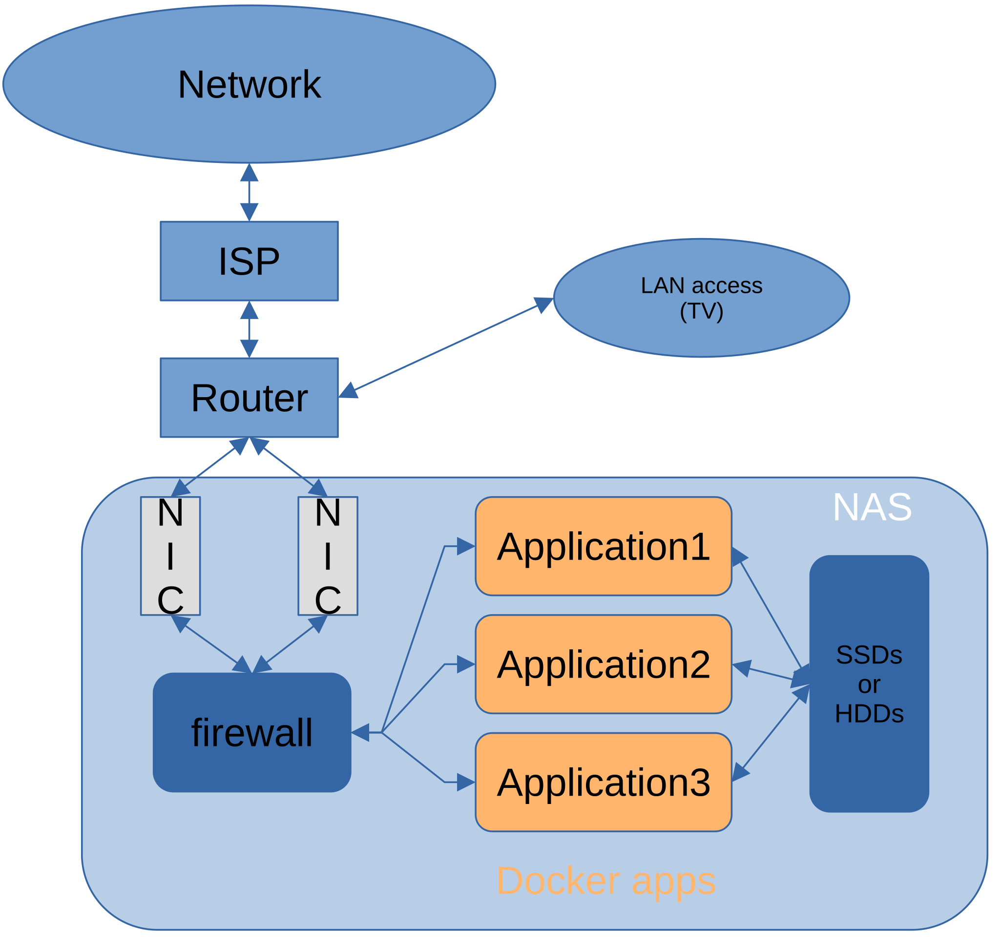
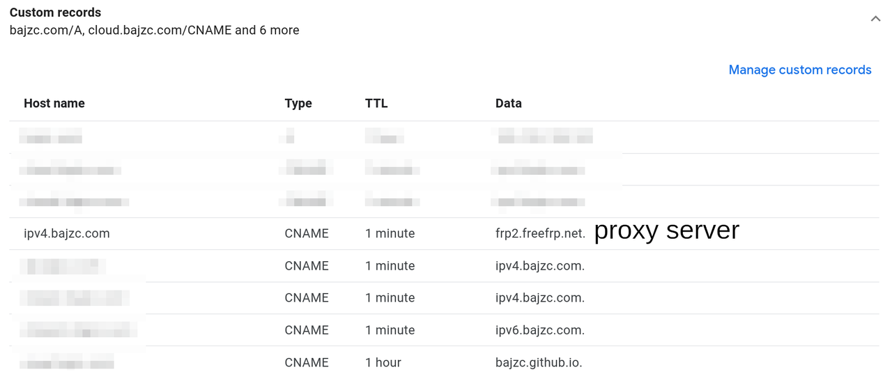
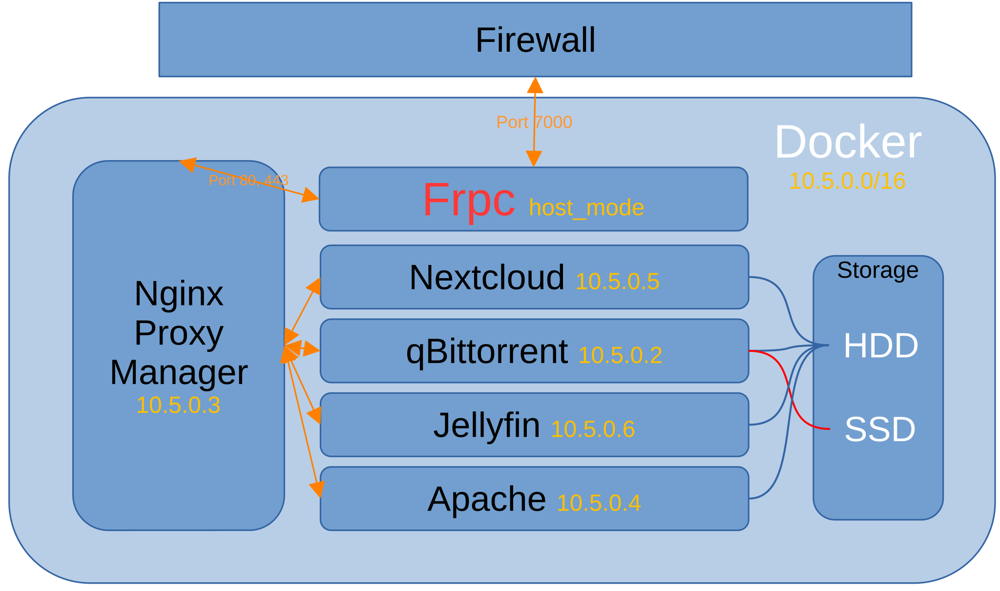
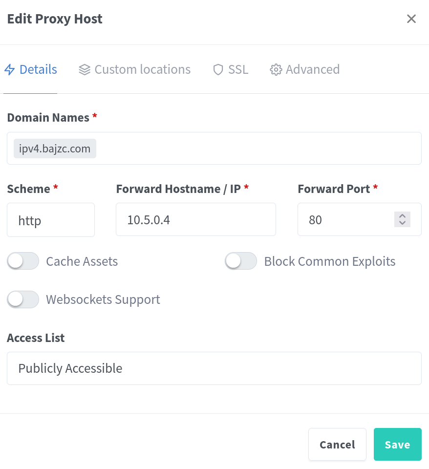
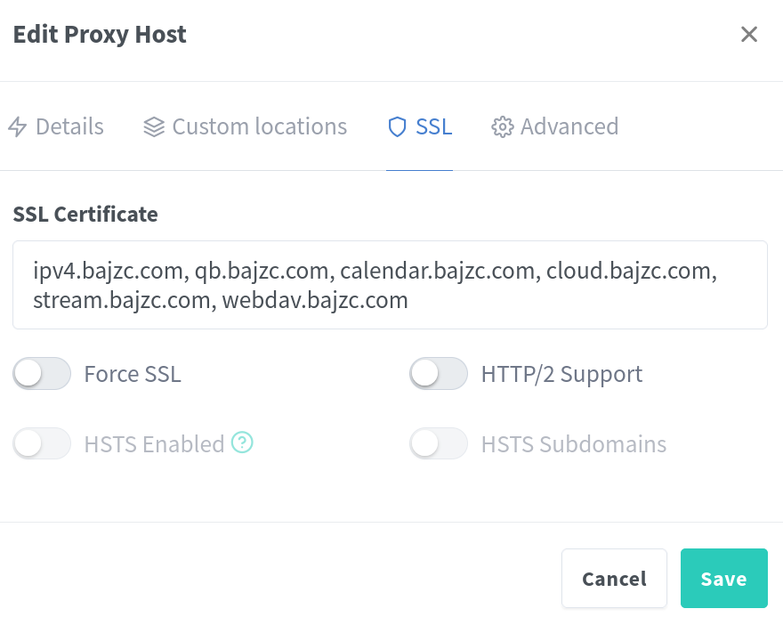

Home NAS deployment
A general guide to build your NAS!
Part I - Basic
Before All...
What is a home NAS?
A typical home NAS is used for storing and sharing photos and files. As an extension to traditional NAS, the server config followed by this article would include more applications like offline downloader, media server, and printer server...
Hardware requirement:
Any kind of popular architecture (x86, amd64, arm64) CPU, with high-speed network (ethernet, WIFI) and disk (USB3.*, SATA, NVME) interface. I'm not going to stop you from using an Android phone with a type-C to 4*USB (with PD backwards charging) as your cherished server.
Because technically I used such a server for more than 6 months, a Raspberry Pi 4. I had developed a habit to reboot it regularly every 2 days and bear the risk of losing all data.
So, be kind to yourself at this stage. Power and noise worth be considered as part of the budget, and also extension capibility.
This is my current hardware, just for reference:
Choice of Operating System
Linux
Not a nerd? Go for Synology NAS
About File System
I'm currently using btrfs, which is a native Linux file system that has lots of modern features attracts me:
CoW (copy on write): File won't be overwritten partially and then broken after a sudden power outage
Compression: save your disk and money
Subvolume and snapshot: save your data from accident such as you deleted your system (you won't, right?)
How to install Linux
I believe there are thousands of tutorials for beginners.
I don't trust any binary distro, I want to compile everything, where should I start?
Part II - Network

Network structure
As far as I know, many ISPs (Internet Service Provider) block Port 80 and 443, which basically means you can not access directily to the web page. There are many workaround: use anther port instead and specify it when you access; use IPv6 instead but 80 and 443 may still be blocked; use a reverse proxy server but with higher delay.
I'm using frp as my reverse proxy software. A reverse proxy server means all your data will pass through a server held by others, so for those highly concerned about security, check out my previous post here
Frpc (client side) listens to a server at a specific port, your DNS record should point to that server. Once a request is made, the server will pass it to you according to the domain name, then frpc will forward it to the right application.
To be clear, frpc is still an application behind the firewall and inside docker. So if you are using IPv4 only, you can block all ports other than the one frpc is using. (only TCP)
Here is my frpc config file:
[common] server_addr = frp2.freefrp.net # proxy server you are using server_port = 7000 # port given by the server holder, default: 7000 token = freefrp.net # password, here the server is for public: https://freefrp.net/ [ipv4_bajzc_com_http] # a unique entity type = http # proxy type local_ip = 10.5.0.3 # local server address local_port = 80 # local server port custom_domains = ipv4.bajzc.com # URL you use to access this application [ipv4_bajzc_com_https] type = https local_ip = 10.5.0.3 local_port = 443 custom_domains = ipv4.bajzc.com ......
A single frpc cannot stand, you need a frps (server) and correct DNS records. A frp server could be a VPS you buy from big cloud computing company, or from "kind" people share their resources. (Again, people concerned about security should check out my previous post here)
My DNS records as reference:

DNS-records
Part III - Docker
Suppose you overcome all difficulties and get your network and disk working now.
This article is mainly focusing on a Linux environment. Thanks to the portability of Docker, it could also apply to a Windows server, but comes at the expense of performance.

Doker applications structures
Here, address in yellow show the IP behind local subnet, which can only be access by local applications. The NPM (nginx proxy manager) is used to handle all access for all domains and warp them with HTTPS.
Docker Network:
Frpc
Nginx Proxy manager
NPM: image: jc21/nginx-proxy-manager:latest container_name: nginx-proxy-manager restart: unless-stopped networks: NPM: ipv4_address: 10.5.0.3 # address frpc should point to ports: # - "0.0.0.0:81:81" # Admin WebUI, disable after setup - "[::]:81:80" # For IPv6 access (The default is block byb 3BB -_-) - "[::]:444:443" volumes: - /.../NPM/data:/data # WebUI data - /.../NPM/letsencrypt:/etc/letsencrypt # https certificates
After you login to the WebUI, setup a proxy like this:

HTTPS:

Nextcloud
Nextcloud: It is a suite of client-server software for creating and using file hosting services.
db: # database image: mariadb:10.6 restart: always command: --transaction-isolation=READ-COMMITTED --log-bin=binlog --binlog-format=ROW volumes: - /.../nextcloud/db:/var/lib/mysql environment: - MYSQL_ROOT_PASSWORD=CHANGEME - MYSQL_PASSWORD=CHANGEME - MYSQL_DATABASE=nextcloud - MYSQL_USER=nextcloud redis: image: redis:alpine restart: always networks: - redisnet expose: - 6379 nextcloud: image: nextcloud restart: always depends_on: - db - redis links: - db volumes: - /.../nextcloud/html:/var/www/html # all your files environment: - REDIS_HOST=redis - MYSQL_PASSWORD=CHANGEME # same password as in db - MYSQL_DATABASE=nextcloud - MYSQL_USER=nextcloud - MYSQL_HOST=db - PHP_MEMORY_LIMIT=1024M - PHP_UPLOAD_LIMIT=1024M networks: redisnet: default: NPM: ipv4_address: 10.5.0.5
Nextcloud requires some small tuning, check out the auto health-check in setting (click your account icon), and edit /.../nextcloud/html/config/config.php according to the document.
If Nextcloud is behind NPM, you need to add its address to trusted_domains and trusted_proxies, for me:
'trusted_domains' => array ( 0 => 'cloud.bajzc.com', 1 => '10.5.0.5', 2 => '10.5.0.3', 3 => 'cloud6.bajzc.com', ), 'trusted_proxies' => array ( 0 => '10.5.0.0/16', ),
As NPM is using HTTP to communicate with Nextcloud:
Docker Compose
All the config chunks I showed are part of the final docker-compose.yml file.
Install docker and docker-compose, edit your docker-compose.yml and run docker compose up -d under the same folder to start all the applications.
My config file
Part IV - Finish?
To be continued...
Comments
Comments powered by Disqus